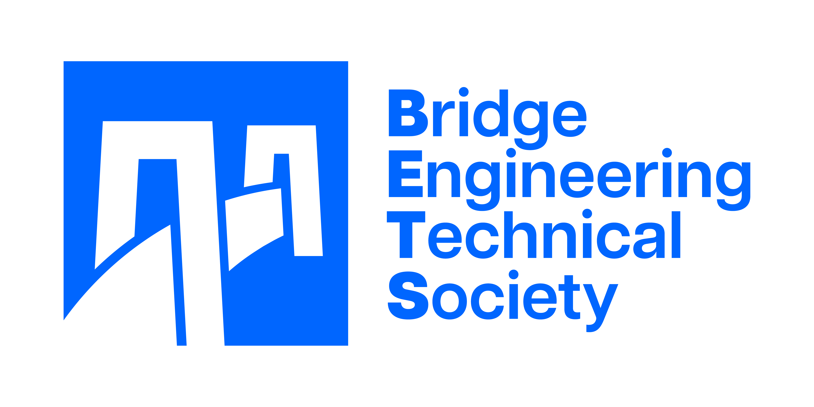

A huge thank you to everyone who attended the 5th International Conference on Timber Bridges (5ICTB) in Rotorua, New Zealand. We hope all attendees had a good time.
A special thank you goes out to our incredible speakers, presenters, sponsors, exhibitors and delegates. Without your support, this event wouldn’t have been the success that it was, and we are truly grateful.
To relive the days at the conference, CLICK HERE to view the official photos.
Welcome to the 5th International Conference on Timber Bridges (5ICTB) in Rotorua, New Zealand!
We are thrilled to be hosting this conference in the stunning city of Rotorua, known for its volcanic and thermal activities that create a relaxing and therapeutic atmosphere. As the first time hosting this conference in the southern hemisphere, we are excited to welcome professionals from around the world to discuss the efficient and reliable use of timber bridges in transportation infrastructure.
Our focus on timber bridges aligns with the current need for resilient infrastructure to support thriving communities, and we believe that by bringing together leading professionals from various fields, we can collectively improve design, productivity, manufacture, supply, and maintenance of timber bridges for the next five decades and beyond.
With a strong panel of local and international speakers expected, we are confident that this conference will provide invaluable insights and knowledge exchange to drive improvements in timber bridge construction worldwide. In addition to the core conference program, we are offering visits to research facilities, manufacturing plants, and other educational expeditions, subject to delegate interest.
While attending the conference, we encourage you to explore the wonders of Rotorua, from its world-famous thermal areas and geysers to the Redwoods Whakarewarewa Forest with its exhilarating mountain bike trails and relaxing geothermal baths. Rotorua truly has something for everyone, whether you're seeking adventure or relaxation.
We extend a warm invitation to all delegates to join us in Rotorua, where Māori culture and the beauty of timber bridges will be showcased in unforgettable ways.
Nau mai, haere mai ki Rotorua! Welcome to Rotorua!


CLICK HERE to find detail on registration fees, accommodation, visa information and some details on what you can do in Rotorua. You will also find the link to online registration form.
Note that our sister conference, World Conference in Timber Engineering 2025, will be held in Brisbane, Australia from 22nd June to 26th June 2025.
The International Conference on Timber Bridges is pleased to introduce the Bridge Competition, a unique opportunity for university students and junior engineers to showcase their skills and creativity in timber bridge design. This competition aims to promote timber bridge construction in New Zealand by challenging participants to create innovative, sustainable, and resilient timber bridge models on a specified scale, using only the provided materials. Through this hands-on experience, participants will deepen their understanding of timber as a construction material, bridge engineering principles, and sustainable design practices.
ObjectivesIf you are interested then please submit your application to the conference organisers at ictb2025@confer.co.nz.
| Date | Day Event | Evening Event |
|---|---|---|
| Sunday 29 June |
Pre Conference (optional):
|
Pōwhiri and Welcome Function |
| Monday 30 June |
Registration Keynote Sessions Concurrent Technical Presentations Industry Trade Exhibition |
Own Time Recommended meeting point for evening socialising: ‘Eat Street’ |
| Tuesday 1 July |
Registration Keynote Sessions Concurrent Technical Presentations Industry Trade Exhibition Student and Young Professional Bridge Competition |
Conference Dinner |
| Wednesday 2 July |
Technical Visits
|
Speaker: David Moses - PhD, PEng, PE, LEED®AP
While timber is not in the mainstream for most Canadian bridge engineers, many new timber bridges have been built in recent years – these serve as examples that inspire a new generation of bridge designers and authorities to consider building with wood. David will highlight the changes that are happening in Canada in standards and education and will present a sampling of recent timber roadway and pedestrian bridges, new and restored, from across Canada, showcasing the work of engineers who continue to pursue and evolve the craft of timber engineering.
|
David is the founder of Moses Structural Engineers, a Toronto-based firm whose core purpose is to have a “Lasting Impact” on our cities and communities. David has over 25 years of experience structural engineering projects across Canada and the United States, including many firsts: early CNCing of mass timber in Canada, first Canadian and Ontario Cross-laminated timber buildings, and adopting new connection systems. David is a member of the CHBDC Section 9 Wood Structures sub-committee, and co-author of the Ontario Wood Bridge Reference Guide (2017). David is also founder of TimberFever® a design-build competition for engineering and architecture students across Canada and the United States. |
Speaker: Steffen Franke - Prof. ehem. Dr.-Ing.
Steffen will describe the possible contribution of long-span timber highway bridges to a global decarbonization strategy for the infrastructural sector, and the feasibility of long-span heavy-duty timber bridges in a mountainous country such as Switzerland.
|
Steffen Franke graduated in structural engineering at the Bauhaus-University Weimar Germany, in 2001 and completed his PhD in 2008 in Timber Engineering. From 2020 until 2012, he was a Postdoctoral Research Fellow in Timber Design with Prof Pierre Quenneville at the University of Auckland in New Zealand. He worked as Professor for Timber Engineering at the Bern University of Applied Sciences in Switzerland from 2012 to 2025. He taught courses mainly in structural and timber design and has an extensive track record of over 30 successful research projects and over 100 publications. Since 2025 he now works at ETH Zürich in the team of Prof. Dr. Andrea Frangi as senior researcher focusing on research and development in timber engineering. |
Speaker: Ralph Belperio - BEng (Hons1) FIE Aust CPEng NER RBP (Vic) RPEQ
Ralph will contribute to the conference with an engaging keynote focussing on the materiality, durability and sustainability of bridge design across Australia, based on his knowledge of timber and its applicability in bridge structures.
He will combine this expertise with what has worked historically in Australia and what technologies are emerging (such as parametrics) that can influence better design outcomes moving forward.
|
In a career spanning 4 decades, Ralph is a recognised industry expert in the design and delivery of Mass Timber Structures. Ralph leads Aurecon’s Timber Expertise capability, having worked with the timber industry across his long consulting career. He has carried out research in glue laminated timber reinforced with Carbon Fibre, Modular School Buildings and the Development of Applications for Robotics in Timber Construction. Ralph is an Executive Board Member and Partner Investigator at the Advance Timber Hub, hosted at the University of Queensland, and is active in several of the research initiatives underway. |
Speaker: Daniel Moroder – PhD dott. Ing. CPEng IntPE(NZ) CMEngNZ
Daniel will describe the design and construction of timber bridges in New Zealand, providing a historical survey of old timber bridges, showcasing a range of current designs, and exploring the future of timber bridges in the country. He is working closely with NZ Transport Agency Waka Kotahi to develop new New Zealand specific guidance on timber bridge design. Additionally, Daniel will discuss recent developments in New Zealand regarding timber manufacturing, durability and pavement compatibility.
 |
Daniel is a senior structural engineer at PTL Structural & Fire, Christchurch, New Zealand. He has designed and managed construction of multi-storey timber buildings and timber bridges, with a focus on practical and cost-effective solutions. He has also assisted clients and fellow engineers with independent peer reviews for projects with innovative materials and structural systems. He is immediate past-president of the New Zealand Timber Design Society. |
ICTB 2025 is delighted to announce that the Conference will be held at the Sir Howard Morrison Centre.
The Sir Howard Morrison Centre sits on land gifted by Ngāti Whakaue, in the heart of Rotorua city. A cultural partnership between mana whenua, the Morrison whānau and Te Arawa ensures a strong foundation underpins all elements of the project.
The Sir Howard Morrison Centre is located on 1170 Fenton Street in the heart of Rotorua. There is on road parking in the area, and the Pukuatua Street parking building is also located within the CBD. For more parking options, please visit the Rotorua Lakes Council website.
Rotorua Lakes Council runs a mobility parking scheme and this provides specific parking spaces and other parking privileges for people with disabilities. Rotorua has at least 2 mobility parks per street in the Rotorua Central District (CBD). The only people who may use mobility parks are those who display current permits.
There are 11 bus routes which cover the Rotorua urban area, visit the Baybus website to plan your trip. Please note the bus service stops shortly after 6pm.
International Committee
|
National Committee
|
Sponsorship of ICTB 2025 provides a unique opportunity for your organisation to show your support and raise your profile in the international timber bridge industry. We invite you to participate in the event as an active partner with a number of different sponsorship packages and opportunities to select from. If you have something specific in mind our team is available to work with you to tailor a package that meets your requirements.
The organisers also welcome you to join the Trade Exhibition and use this excellent opportunity to exhibit your products and services to international conference participants.
If you or your company/organisation would like to learn more about sponsorship & exhibition opportunities at ICTB 2025, please download the Sponsorship & Exhibition Prospectus.
 |
 |
|  |
|
Bridge design & engineering (Bd&e) is exclusively dedicated to the international bridge industry. This high quality, visually stunning quarterly magazine offers subscribers details of the latest innovations, technical features, interviews and project reports. Topics regularly covered in Bd&e include structural engineering, architectural design, construction engineering, asset management, cable technology, specialist software, formwork, protective coatings, seismic safety and new products and technologies across all bridge engineering sectors. As well as four publications a year, Bd&e provides subscribers with a high quality website www.bridgeweb.com, a fully-searchable archive of back issues, a regular eNewsletter, an annual directory of suppliers, and special supplements that cover different aspects of the industry in more detail. If you finance, plan, design, build, maintain, operate or own a bridge, you need Bd&e. For more information, or to subscribe, please call +44 (0)1371 853624 or bridges@hgluk.net. |
Join our mailing List for updates on ICTB 2025 by providing your details here.